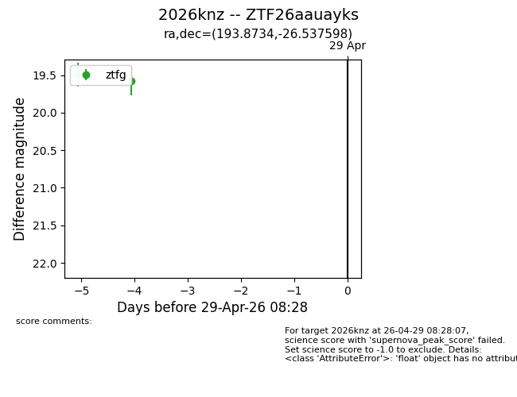
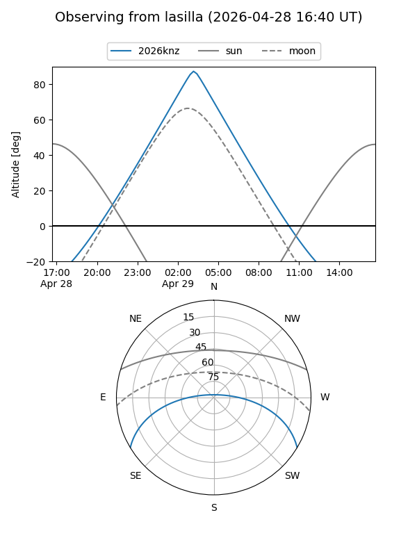
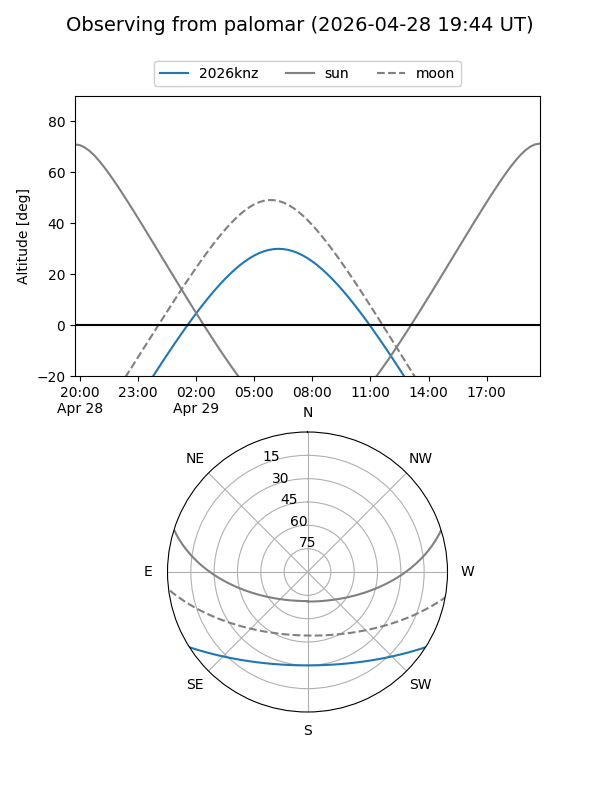
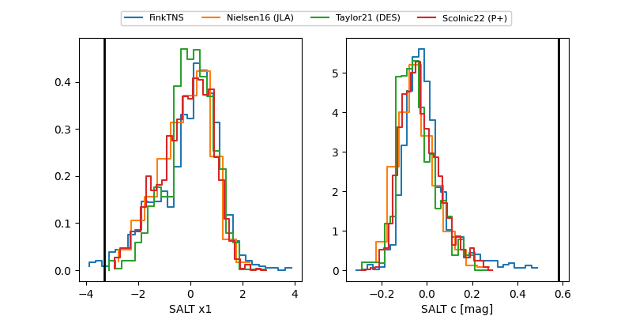

2026knz
Target 2026knz at 2026-04-29 08:31
Aliases and brokers:
FINK: link
Lasair: link
ALeRCE: link
TNS: link
YSE: link
alt names
ZTF26aauayks (ztf,fink_ztf)
2026knz (tns,yse)
Coordinates:
equatorial (ra, dec) = 193.8734,-26.53760
equatorial (HMS+DMS) = 12:55:29.63,-26:32:15.35
galactic (l, b) = (304.0579,+36.32528)
Flags:
Photometry:
last ztfg=19.58
2 ztfg detections
Lightcurve

Visibility


Additional plots
